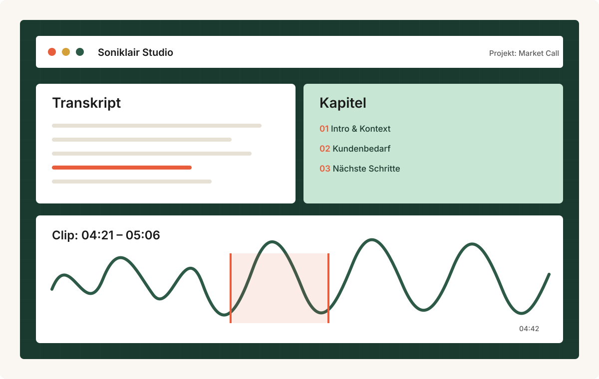

Transkripte mit Zeitmarken
Upload oder Podcast-Import starten eine Transkription. Das Ergebnis bleibt sekundengenau durchsuchbar und springt direkt zur passenden Audiostelle.
Soniklair Studio wandelt Podcasts, Interviews, Vorlesungen und Meetings in strukturierte Transkripte mit Kapiteln, Fundstellen und teilbaren Clips um.

Transkription, Strukturierung und Wiederverwendung laufen in einer Oberfläche zusammen. So bleibt Audio nicht nur archiviert, sondern tatsächlich nutzbar.
Upload oder Podcast-Import starten eine Transkription. Das Ergebnis bleibt sekundengenau durchsuchbar und springt direkt zur passenden Audiostelle.
Die Software erstellt strukturierte Kapitel und markiert Sprecherwechsel, damit lange Aufnahmen schneller geprüft werden können.
Nutzer wählen eine Text- oder Zeitspanne, speichern sie als Clip und erhalten eine kurze Zusammenfassung mit Kontext.
Private Uploads bleiben in der eigenen Library. Öffentliche Podcast-Inhalte können im Catalogue organisiert und wiederverwendet werden.
Soniklair richtet sich an Teams, die Aussagen aus langen Aufnahmen schnell wiederfinden, markieren und weiterverwenden müssen.
Monatlich kündbar, digital bereitgestellt. Die aktuelle Website zeigt den Bestellablauf in vereinfachter Form direkt im Browser.
19 €/Monat inkl. USt.
Monatliche Mindestlaufzeit, kündbar zum Monatsende.
Empfohlen
49 €/Monat inkl. USt.
Monatliche Mindestlaufzeit, kündbar zum Monatsende.
129 €/Monat inkl. USt.
Monatliche Mindestlaufzeit, kündbar zum Monatsende.
Alle Preise verstehen sich inklusive 20 Prozent österreichischer Umsatzsteuer. Für die digitale Bereitstellung fallen keine Versandkosten an.
Das Abo läuft monatlich und kann zum Ende jedes Abrechnungsmonats gekündigt werden. Die aktuelle Website bestätigt Bestellungen direkt im Browser und nutzt keine externe Zahlungsabwicklung.
Unternehmen, Marke, Lizenz, Datenschutz und Kontakt werden auf eigenen Seiten ergänzt.